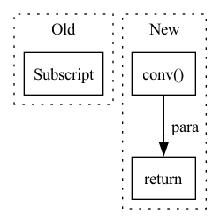

Pattern ID :8180

Before Change
if not self.coord_conv:
return input
b = input.shape[0]
h = input.shape[2]
w = input.shape[3]
x_range = T.arange(0, w, dtype=T.float32, device=input.device) / (w - 1) * 2.0 - 1
y_range = T.arange(0, h, dtype=T.float32, device=input.device) / (h - 1) * 2.0 - 1
x_range = x_range[np.newaxis, np.newaxis, np.newaxis, :].repeat((b, 1, h, 1))
After Change
y = torch.cat([x, gx, gy], 1)
else:
y = torch.cat([x, gx, gy], -1)
y = self.conv(y)
return y
class SPP2(torch.nn.Module):
In pattern: SUPERPATTERN
Frequency: 3
Non-data size: 3
Instances
Fragment ID: 28818231
Project Name: miemie2013/miemiedetection
Commit Name: aabe1f2d364493c30179de6cf7d5c2d0c6ee7258
Time: 2021-12-30
Author: 53960695+miemie2013@users.noreply.github.com
File Name: mmdet/models/custom_layers.py
M Class Name: CoordConv
N Class Name: CoordConv
M Method Name: forward(2)
N Method Name: forward(2)
M Parent Class: torch.nn.Module
N Parent Class: torch.nn.Module
M File Name: mmdet/models/custom_layers.py
N File Name: mmdet/models/custom_layers.py
M Start Line: 498
M End Line: 508
N Start Line: 574
N End Line: 580
'>
Before Change
self.conv = Conv(c1 * 4, c2, k, s, p, g, act)
def forward(self, x): // x(b,c,w,h) -> y(b,4c,w/2,h/2)
return self.conv(torch.cat([x[..., ::2, ::2], x[..., 1::2, ::2], x[..., ::2, 1::2], x[..., 1::2, 1::2]], 1))
class Concat(nn.Module):
After Change
def forward(self, x: Tensor) -> Tensor:
y = focus_transform(x)
out = self.conv(y)
return out
def focus_transform(x: Tensor) -> Tensor:
'>
Fragment ID: 28818230
Project Name: zhiqwang/yolov5-rt-stack
Commit Name: 5633f4d6d59438739ee0ee40a91fc80328f22b12
Time: 2020-10-03
Author: zhiqwang@outlook.com
File Name: models/common.py
M Class Name: Focus
N Class Name: Focus
M Method Name: forward(2)
N Method Name: forward(2)
M Parent Class: nn.Module
N Parent Class: nn.Module
M File Name: models/common.py
N File Name: models/common.py
M Start Line: 90
M End Line: 91
N Start Line: 90
N End Line: 94
'>
Before Change
mu2, var2 = x2
// input is CHW
diffY = mu2.size()[2] - mu1.size()[2]
diffX = mu2.size()[3] - mu1.size()[3]
x1 = F.pad(x1, [diffX // 2, diffX - diffX // 2,
After Change
mu = torch.cat([mu2, mu1], dim=1)
var = torch.cat([var2, var1], dim=1)
return self.conv(mu, var)
else:
raise NotImplementedError
'>
Fragment ID: 28818228
Project Name: mstoelzle/solving-occlusion
Commit Name: 1e2846ebe3efb8a9dc45953b88ca9003447a482d
Time: 2020-12-08
Author: maximilian@stoelzle.ch
File Name: src/learning/models/unet/unet_parts.py
M Class Name: Up
N Class Name: Up
M Method Name: forward(3)
N Method Name: forward(3)
M Parent Class: nn.Module
N Parent Class: nn.Module
M File Name: src/learning/models/unet/unet_parts.py
N File Name: src/learning/models/unet/unet_parts.py
M Start Line: 73
M End Line: 101
N Start Line: 96
N End Line: 107